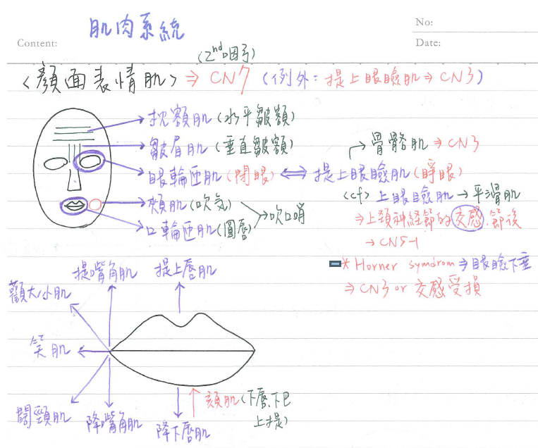

🙁 肌肉系統：顏面表情肌
| 肌肉 | 負責動作 | 備註 |
|---|---|---|
| 枕額肌（Occipitofrontalis m.） | 水平皺額 | |
| 皺眉肌(Corrugator supercilii m.) | 垂直皺額 | |
| 提上眼瞼肌 (levator palpebrae superioris m.) | 提上眼瞼(睜眼) | ★★★動眼N支配 |
| 眼輪匝肌(orbicularis oculi m.) | ★閉眼 | |
| 口輪匝肌(orbicularis oris m.) | 嘟嘴 | |
| 頰肌(buccinator m.) | 牽引嘴角向後(縮臉頰) | ★耳下腺導管穿過 ★CN7的分支：頰N. |
| 笑肌(risorius m.) | 嘴角外展 | |
| 顴大肌(zygomatic major m.) | 嘴角上揚 | |
| 顴小肌(zygomatic minor m.) | 嘴角上揚 | |
| 提嘴角肌(levator labii superioris m.) | 嘴角上揚 | |
| 提上唇肌(levator labii superioris) | 上唇上提 | |
| ★闊頸肌(platysma m.) | 下唇下壓 頸部&前胸起皺紋 | 也是顏面表情肌~ |
| 降嘴角肌(depressor anguli oris m.) | 嘴角下壓 | |
| 降下唇肌(depressor labii inferioris m.) | 下唇下壓 | |
| 耳肌(auricularis m.) | 耳朵向前、後、上移動 | |
| 擴鼻肌(dilator naris m.) | 鼻孔擴大 | |
| 壓鼻肌(compressor naris m.) | 鼻孔縮小 | |
| 頦肌(mentalis m.) | 將下巴&下唇上提 |

- 顏面表情肌★★★大多由顏面N支配。例外：★★提上眼瞼肌→動眼N(CN 3)
- 上瞼板肌(superior tarsla m. , 眼皮那一層肌肉)：為平滑肌，由★CN 5-1(自上頸神經節的交感節後N.)支配
- 顏面表情肌大多起於骨骼or筋膜，止於皮膚
- 顏面表情肌大多源自第二咽弓(例外：提上眼瞼肌)
- 吹口哨：口輪匝肌+頰肌
- 眼瞼下垂(ptosis)：動眼N受損 or 頸部交感神經幹受損(EX：Horner's syndrome)
- Horner's syndrome：
- 病因：支配眼睛的交感神經受到阻斷(路徑任一環節受阻皆有可能造成)
- 症狀：瞳孔縮小，眼瞼下垂，半邊顏面無汗
- 交感神經纖維路徑：下視丘→中腦、橋腦→脊柱→交感神經幹→頸神經節→肌肉、血管、汗腺
- 常見病因：
- 中樞：腦血管變異，腦膜炎，腦部腫瘤，出血，去髓鞘化疾病，頸部外傷...
- 周邊：肺部腫瘤(壓迫交感神經)，臂神經叢受傷，胸部外傷，動脈瘤，淋巴腺瘤，神經母細胞瘤.....
- 感染：帶狀泡疹，梅毒...
📖 書本補充：與筆記不同或筆記沒寫到的地方
⚠️
以下為對照書本後整理，筆記原文未更動。書中沒有獨立的「顏面表情肌」表格，內容散在頭皮、眼瞼、口腔及顏面神經各節。
顏面神經的五條終端支各管哪裡（p.496–497）
- 顏面神經出莖乳孔後穿過腮腺，分成 5 條終端支（圖 119）：
- 顳支：枕額肌的額肌腹、眼輪匝肌上部
- 顴支：眼輪匝肌下部、顴大肌與顴小肌
- 頰支：頰肌及上唇的肌肉
- 下頷支：下唇的肌肉
- 頸支：闊頸肌
- 出莖乳孔前後另有：耳後神經、到二腹肌後腹、到莖突舌骨肌、到鐙骨肌的分支（這些也都是第二咽弓的肌肉）。
- 頰肌的「頰N」要分清楚：V3 也有一條頰神經，但它是感覺神經；支配頰肌（表情肌）的是顏面神經的頰支（p.527 提示）。
第二咽弓的肌肉（p.95、p.472）
- 第二咽弓（CN VII）衍生：顏面表情肌、鐙骨肌、莖突舌骨肌、二腹肌後腹。筆記只寫表情肌，考題會把鐙骨肌一起考（見 113-1-11）。
- 對照：嚼肌、腭帆張肌、鼓膜張肌屬第一咽弓（CN V）；書的提示：頭部兩條「張肌」都由三叉N支配。
頰肌（p.535）
- 書明確說：頰肌屬於表情肌、不是咀嚼肌，所以由顏面N支配。
- 作用：壓迫臉頰，咀嚼時讓食物不會卡在牙齒與臉頰之間；也協助用力吹氣。
- 頰肌起點之一是翼下頷縫的前方；同一條縫的後方是上咽縮肌的起點。
- 腮腺管穿過頰肌，開口在上排第二顆臼齒對面的口腔（p.505 解析，與筆記一致）。
眼瞼（p.515）
- 瞼板（tarsal plate）是緻密結締組織，眼輪匝肌和提上眼瞼肌的纖維附在它表面。
- 上瞼板肌在提上眼瞼肌的下方，是平滑肌，由交感纖維支配（p.485 解析也是這樣寫）。
- 瞼韌帶的內側部是眼輪匝肌的起點。
- 提上眼瞼肌（p.486）：起於視神經管前方的蝶骨小翼，止於瞼板前方及上眼瞼皮膚，由動眼神經上支支配。
頭皮與枕額肌（p.512）
- 頭皮五層＝SCALP：皮膚、結締組織、腱膜（枕額肌附著處）、疏鬆結締組織、顱骨外膜。
- 第 2 層（結締組織）有豐富血管與神經；第 4 層（疏鬆結締組織）讓頭皮可移動，但也是感染容易擴散進顱腔的危險區。
- 頭皮的動脈：內頸系的滑車上、眶上；外頸系的枕、耳後、顳淺。神經：三叉、枕大和枕小、耳大。
闊頸肌的神經（p.557）
- 闊頸肌雖在頸部，屬表情肌，由顏面N（頸支）支配，不是頸神經叢（鎖骨上N只管皮膚感覺）。
📝 書中歷屆考題（點選答案作答）
113-1-33p.96
衍生自第二咽弓 (second pharyngeal arch) 的肌肉，是由下列那一條腦神經支配？
113-1-11p.499
下列何者的收縮，是由第七對腦神經 (CN VII) 支配？
💡 嚼肌、內翼肌是咀嚼肌（三叉N）；鼓膜張肌在中耳但也屬三叉N，頭部兩條張肌都是 V 支配。
107-2-15p.498
關於面神經 (facial nerve) 之敘述，下列何者錯誤？
💡 咀嚼肌的本體感覺由三叉N下頷支傳送。
103-2-11p.505
耳下腺導管 (parotid duct) 穿過下列何者開口於口腔？
💡 開口在上排第二顆臼齒對面。
111-2-11p.541
下列有關嘴唇結構的敘述，何者錯誤？
💡 除了頦下淋巴結，嘴唇的淋巴也會流到下頷下淋巴結。
113-1-7p.557
下列有關鎖骨上神經 (supraclavicular nerve) 之描述，何者正確？
💡 鎖骨上N來自頸神經叢，管肩膀及上胸部皮膚；闊頸肌是表情肌，由顏面N支配。
101-1-21p.483
第三顱神經受損，最可能影響下列何種動作？
💡 咀嚼＝CN V，流汗＝交感，閉眼（眼輪匝肌）＝CN VII。
101-2-4p.485
下列有關眼部肌肉之控制，何者錯誤？
💡 上瞼板肌是平滑肌，由交感纖維支配。
106-1-16p.484
病患的上眼瞼下垂 (ptosis)，最可能是由於下列何者受損所造成？
111-2-7p.515
下列關於眼瞼 (eyelid) 的描述，何者正確？
💡 瞼板腺是皮脂腺（分泌油脂）；淚湖在內側；提上眼瞼肌負責張開眼瞼。
113-1-8p.512
有關頭皮 (scalp)，下列敘述何者錯誤？
💡 頭皮的動脈走在由外往內第二層（結締組織層）；(B) 指的是第四層（疏鬆結締組織）。